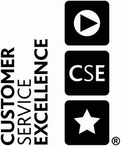

Trade Mark Journal No.2025/050 12 December 2025
UK00004184184 4 April 2025 (35,36,37,38,39,40,41,42,43,44,45)
Certification Mark

- Class 35
- Services for customers, namely advisory, consultancy, and information services, all relating to advertising, business management, business administration, office functions, electronic data storage, organisation, operation and supervision of loyalty and incentive schemes, advertising services provided via the Internet, production of television and radio advertisements, accountancy, auctioneering, trade fairs, opinion polling, data processing, provision of business information, retail services; consultancy, advisory and information services all relating to the aforesaid services.
- Class 36
- Services for customers, namely advisory, consultancy, and information services, all relating to insurance services, financial services, real estate agency services, building society services, banking, stock broking, financial services provided via the Internet, monetary affairs services, issuing of tokens of value in relation to bonus and loyalty schemes, provision of financial information; consultancy, advisory and information services all relating to the aforesaid services.
- Class 37
- Services for customers, namely advisory, consultancy, and information services, all relating to building and construction services, repair services, cleaning services, painting and decorating services, maintenance services, installation services; consultancy, advisory and information services all relating to the aforesaid services.
- Class 38
- Services for customers, namely advisory, consultancy, and information services, all relating to telecommunications services, chat room services, portal services, e-mail services, providing user access to the Internet, radio and television broadcasting; consultancy, advisory and information services all relating to the aforesaid services.
- Class 39
- Services for customers, namely advisory, consultancy, and information services, all relating to transport services, packaging and storage services, travel arrangement services, distribution of electricity, travel information, provision of car parking facilities; consultancy, advisory and information services all relating to the aforesaid services.
- Class 40
- Services for customers, namely advisory, consultancy, and information services, all relating to treatment of materials, development, duplicating and printing of photographs, generation electricity; consultancy, advisory and information services all relating to the aforesaid services.
- Class 41
- Services for customers, namely advisory, consultancy, and information services, all relating to education services, providing of training, entertainment services, sporting and cultural activities; consultancy, advisory and information services all relating to the aforesaid services.
- Class 42
- Services for customers, namely advisory, consultancy, and information services, all relating to scientific and technological services and research and design relating thereto, industrial analysis and research services, design and development of computer hardware and software, computer programming, installation, maintenance and repair of computer software, computer consultancy services, design, drawing and commissioned writing for the compilation of web sites, creating, maintaining and hosting the web sites of others, design services; consultancy, advisory and information services all relating to the aforesaid services.
- Class 43
- Services for customers, namely advisory, consultancy, and information services, all relating to services for providing food and drink, temporary accommodation, restaurant, bar and catering services, provision of holiday accommodation, booking and reservation services for restaurants and holiday accommodation, retirement home services, crèche services; consultancy, advisory and information services all relating to the aforesaid services.
- Class 44
- Services for customers, namely advisory, consultancy, and information services, all relating to medical and healthcare services, veterinary services, hygienic and beauty care services for human beings or animals, agriculture, horticulture and forestry services, dentistry services, medical analysis for the diagnosis and treatment of persons, pharmacy advice, garden design services; consultancy, advisory and information services all relating to the aforesaid services.
- Class 45
- Services for customers, namely advisory, consultancy, and information services, all relating to legal services, barrister services, solicitors' services conveyancing services, information relating to standards, regulation of financial services, ministerial services [religious], missionary services, charitable services, namely mentoring [personal or spiritual], spiritual recovery services, security services for the protection of property and individuals, airport security, police services, private investigation services marriage bureau services, social work services, adoption agency services, babysitting services, maid services, safety services, consultancy services relating to health and safety, consultancy services relation to personal appearance, provision of personal tarot readings, dating services, personal shopper services, information relating to fashion, funeral services and undertaking services, fire-fighting services, detective agency services, political lobbying services; consultancy, advisory and information services all relating to the aforesaid services. .
Assessment Services Ltd
The Regulations provisionally accepted by the Registrar for governing the use of this Certification trade mark are open to inspection at the Trade Marks Registry, from where copies may be obtained. If no opposition arises the Registrar will approve the Regulations and the mark will proceed to registration.